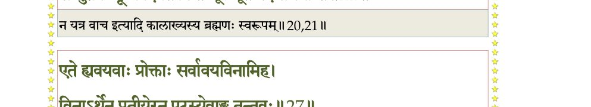
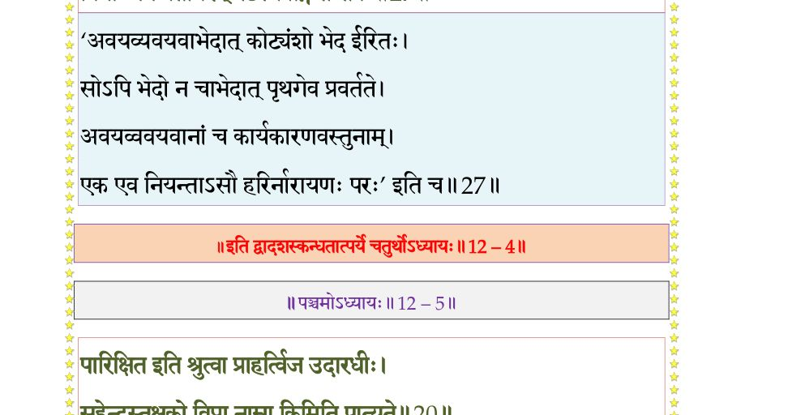
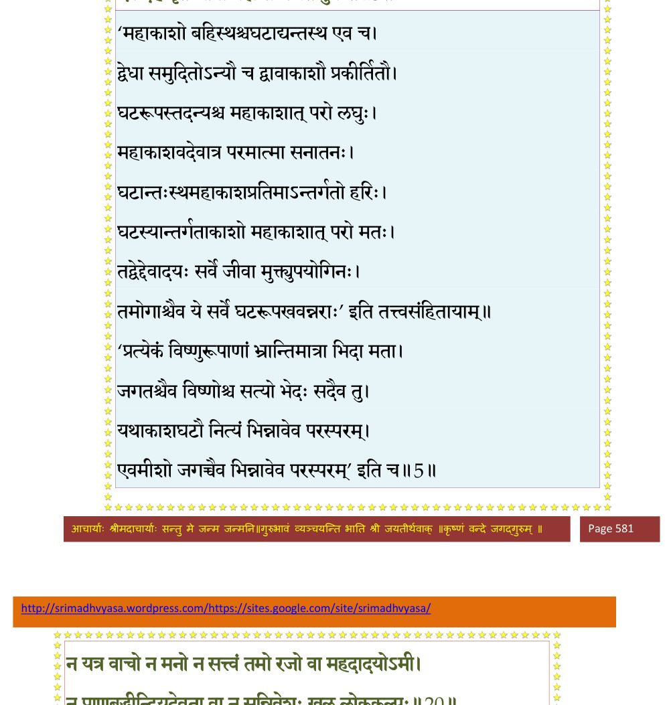

स्कन्ध 12 · अध्याय 4
श्लोक १
श्रीशुक उवाच–
कालस्ते परमाण्वादिर्द्विपरार्धावधिर्नृप ।
कथितो युगमानं च शृणु कल्पलयावथ ।। १ ।।
कालस्ते परमाण्वादिर्द्विपरार्धावधिर्नृप ।
कथितो युगमानं च शृणु कल्पलयावथ ।। १ ।।
श्लोक २
चतुर्युगसहस्रं तु ब्रह्मणो दिनमुच्यते ।
स कल्पो यत्र मनवश्चतुर्दश विशां पते ।। २ ।।
स कल्पो यत्र मनवश्चतुर्दश विशां पते ।। २ ।।
श्लोक ३
यदन्ते प्रलयस्तावान् ब्राह्मी रात्रिरुदाहृता ।
त्रयो लोका इमे यत्र कल्पन्ते प्रलयाय हि ।। ३ ।।
त्रयो लोका इमे यत्र कल्पन्ते प्रलयाय हि ।। ३ ।।
श्लोक ४
एष नैमित्तिकः प्रोक्तः प्रलयो यत्र विश्वसृक् ।
शेतेऽनन्तासनो विश्वमात्मसात्कृत्य आत्मभूः ।। ४ ।।
शेतेऽनन्तासनो विश्वमात्मसात्कृत्य आत्मभूः ।। ४ ।।
श्लोक ५
द्विपरार्धे त्वतिक्रान्ते ब्रह्मणः परमेष्ठिनः ।
तदा प्रकृतयः सप्त कल्पन्ते प्रलयाय वै ।। ५ ।।
तदा प्रकृतयः सप्त कल्पन्ते प्रलयाय वै ।। ५ ।।
श्लोक ६
एष प्राकृतिको राजन् प्रलयो यत्र लीयते ।
आण्डकोशस्तु सङ्घातो विघात उपसादिते ।। ६ ।।
आण्डकोशस्तु सङ्घातो विघात उपसादिते ।। ६ ।।
श्लोक ७
पर्जन्यः शतवर्षाणि भूमौ राजन् न वर्षति ।
तदा निरन्ने ह्यन्योन्यं भक्ष्यमाणाः क्षुधार्दिताः ।
क्षयं यास्यन्ति शनकैः कालेनोपद्रुताः प्रजाः ।। ७ ।।
तदा निरन्ने ह्यन्योन्यं भक्ष्यमाणाः क्षुधार्दिताः ।
क्षयं यास्यन्ति शनकैः कालेनोपद्रुताः प्रजाः ।। ७ ।।
श्लोक ८
(अयमर्धपादः भाग्यनगरमुद्रापितकोशे नास्ति ।
वैष्णवपाठे गृहीतः । व्याख्यातं विजयध्वजभट्टारकैः
काले नेति पदेन ।)
सामुद्रं दैहिकं भौमं रसं सांवर्तको रविः ।
रश्मिभिः पिबते घोरैः सर्वं नैव विमुञ्चति ।। ८ ।।
वैष्णवपाठे गृहीतः । व्याख्यातं विजयध्वजभट्टारकैः
काले नेति पदेन ।)
सामुद्रं दैहिकं भौमं रसं सांवर्तको रविः ।
रश्मिभिः पिबते घोरैः सर्वं नैव विमुञ्चति ।। ८ ।।
श्लोक ९
ततः सांवर्तको वह्निः सङ्कर्षणमुखोत्थितः ।
दहत्यनिलवेगोत्थः शून्यान् भूविवरानथ ।। ९ ।।
दहत्यनिलवेगोत्थः शून्यान् भूविवरानथ ।। ९ ।।
श्लोक १०
उपर्यधः समन्ताच्च शिखाभिर्वह्निसूर्ययोः ।
दह्यमानं विभात्यण्डं दग्धगोमयपिण्डवत् ।। १० ।।
दह्यमानं विभात्यण्डं दग्धगोमयपिण्डवत् ।। १० ।।
श्लोक ११
ततः प्रचण्डपवनो वर्षाणामधिकं शतम् ।
परः सांवर्तको वाति धूम्रं खं रजसा वृतम् ।। ११ ।।
परः सांवर्तको वाति धूम्रं खं रजसा वृतम् ।। ११ ।।
श्लोक १२
ततो मेघकुलान्यङ्गः चित्रवर्णान्यनेकशः ।
शतं वर्षाणि वर्षन्ति नदन्ति रभसस्वनैः ।। १२ ।।
शतं वर्षाणि वर्षन्ति नदन्ति रभसस्वनैः ।। १२ ।।
श्लोक १३
तत एकोदकं विश्वं ब्रह्माण्डविवरान्तरम् ।। १३ ।।
श्लोक १४
तदा भूमेर्गन्धगुणं ग्रस(त्या)न्त्याप उपप्लवे ।
ग्रस्तगन्धा तु पृथिवी प्रलयत्वाय कल्पते ।। १४ ।।
ग्रस्तगन्धा तु पृथिवी प्रलयत्वाय कल्पते ।। १४ ।।
श्लोक १५
अपां रसमथो तेजस्ता लीयन्तेऽथ नीरसाः ।
ग्रसते तेजसो रूपं वायुस्तद्रहितं तदा ।। १५ ।।
ग्रसते तेजसो रूपं वायुस्तद्रहितं तदा ।। १५ ।।
श्लोक १६
लीयते चानिले तेजो वायोः खं ग्रसते गुणम् ।
स वै विशति खं राजंस्ततश्च नभसो गुणम् ।
शब्दं ग्रसति भूतादिर्नभस्तम(द)नु लीयते ।। १६ ।।
स वै विशति खं राजंस्ततश्च नभसो गुणम् ।
शब्दं ग्रसति भूतादिर्नभस्तम(द)नु लीयते ।। १६ ।।
श्लोक १७
तैजसानीन्द्रियाण्यङ्ग देवा वैकारिका गुणैः ।। १७ ।।
श्लोक १८
महान् ग्रसत्यहङ्कारं गुणाः सत्वादयश्च तम् ।
ग्रसतेऽव्याकृतं बीजं गुणान् कालेन चोदितम् ।। १८ ।।
ग्रसतेऽव्याकृतं बीजं गुणान् कालेन चोदितम् ।। १८ ।।
श्लोक १९
न तस्य कालावयवैः परिणामादयो गुणाः ।
अनाद्यनन्तमव्यक्तं नित्यं कारणमव्ययम् ।। १९ ।।
अनाद्यनन्तमव्यक्तं नित्यं कारणमव्ययम् ।। १९ ।।
श्लोक २०
न यत्र वाचो न मनो न सत्वं तमो रजो वा महदादयोऽमी ।
न प्राणबुद्धीन्द्रियदेवता वा न सन्निवेशः खलु लोककल्पः ।। २० ।।
न प्राणबुद्धीन्द्रियदेवता वा न सन्निवेशः खलु लोककल्पः ।। २० ।।
भागवततात्पर्यनिर्णय
श्लोक २१
न स्वप्नजाग्रन्न च तत् सुषुप्तं न खं जलं भूरनिलोऽग्निरर्कः ।
सुषुप्तवच्छून्यवदप्रतर्क्यं तन्मूलभूतं पदमामनन्ति ।। २१ ।।
सुषुप्तवच्छून्यवदप्रतर्क्यं तन्मूलभूतं पदमामनन्ति ।। २१ ।।
भागवततात्पर्यनिर्णय

श्लोक २२
लयः प्राकृतिको ह्येष पुरुषाव्यक्तयोर्यदा ।
शक्तयः सम्प्रलीयन्ते विवशाः कालविद्रुताः ।। २२ ।।
शक्तयः सम्प्रलीयन्ते विवशाः कालविद्रुताः ।। २२ ।।
श्लोक २३
बुद्धीन्द्रियार्थरूपेण ज्ञानं भाति तदाश्रयम् ।
अन्वयव्यतिरेकाभ्यामाद्यन्तवदवस्तु यत् ।। २३ ।।
अन्वयव्यतिरेकाभ्यामाद्यन्तवदवस्तु यत् ।। २३ ।।
श्लोक २४
दीपश्चक्षुश्च रूपं च तेजसो न पृथग् भवेत् ।
एवं धीः खानि मात्राश्च न स्युरप्युत मारुतात् ।। २४ ।।
एवं धीः खानि मात्राश्च न स्युरप्युत मारुतात् ।। २४ ।।
श्लोक २५
बुद्धेर्जागरणं स्वप्नः सुषुप्तिरिति होच्यते ।
मायामात्रमिदं राजन् नानात्वं प्रत्यगात्मनि ।। २५ ।।
मायामात्रमिदं राजन् नानात्वं प्रत्यगात्मनि ।। २५ ।।
श्लोक २६
यथा जलधरा व्योमि्न भवन्ति न भवन्ति च ।
ब्रह्मणीदं तदा विश्वमुपयात्युदयाप्ययम् ।। २६ ।।
ब्रह्मणीदं तदा विश्वमुपयात्युदयाप्ययम् ।। २६ ।।
श्लोक २७
एते ह्यवयवाः प्रोक्ताः सर्वावयविनामिह ।
विनार्थे न प्रतीयेरन् पटस्येवाङ्ग तन्तवः ।। २७ ।।
विनार्थे न प्रतीयेरन् पटस्येवाङ्ग तन्तवः ।। २७ ।।
भागवततात्पर्यनिर्णय

श्लोक २८
यत् सामान्यविशेषाभ्यामुपलभ्येत स भ्रमः ।
अन्योन्यापाश्रयात् सर्वमाद्यन्तवदवस्तु च ।। २८ ।।
अन्योन्यापाश्रयात् सर्वमाद्यन्तवदवस्तु च ।। २८ ।।
श्लोक २९
विकारः ख्यायमानोऽपि प्रत्यगात्मानमन्तरा ।
न निरूप्यो ह्यणुरपि स्याच्चेत् स भ्रम आत्मनः ।। २९ ।।
न निरूप्यो ह्यणुरपि स्याच्चेत् स भ्रम आत्मनः ।। २९ ।।
श्लोक ३०
न हि सत्यस्य नानात्वमविद्वान् यदि मन्यते ।
नानात्वं छिद्रयोर्यद्वज्ज्योतिषोर्वा तयोरपि ।। ३० ।।
नानात्वं छिद्रयोर्यद्वज्ज्योतिषोर्वा तयोरपि ।। ३० ।।
श्लोक ३१
यथा हिरण्यं बहुधा समीयते नृभिः क्रियाभिर्व्यवहारवर्त्मसु ।
एवं वचोभिर्भगवानधोक्षजो व्याख्यायते वैदिकलौकिकैर्जनैः।। ३१ ।।
एवं वचोभिर्भगवानधोक्षजो व्याख्यायते वैदिकलौकिकैर्जनैः।। ३१ ।।
श्लोक ३२
यथा घनोऽर्कप्रभवोऽर्कदर्शितो ह्यर्कांशभूतस्य च चक्षुषस्तमः ।
एवं त्वहं ब्रह्मगुणस्तदीक्षितो ब्रह्मांशकस्यात्मन आत्मबन्धनः ।।३२।।
एवं त्वहं ब्रह्मगुणस्तदीक्षितो ब्रह्मांशकस्यात्मन आत्मबन्धनः ।।३२।।
श्लोक ३३
घनो यदाऽर्कप्रभया विदीर्यते चक्षुःस्वरूपं परमीक्षते तदा ।
यदा ह्यहङ्कार उपाधिरात्मनो जिज्ञासया नश्यति तर्ह्यनुस्मरेत्।।३३।।
यदा ह्यहङ्कार उपाधिरात्मनो जिज्ञासया नश्यति तर्ह्यनुस्मरेत्।।३३।।
श्लोक ३४
यदैवमेतेन विवेकहेतिना मायामयाहङ्करणात्मबन्धनम् ।
छित्वाऽच्युतात्मानुभवोऽवतिष्ठते तमाहुरात्यन्तिकमङ्ग सम्प्लवम् ।।३४।।
छित्वाऽच्युतात्मानुभवोऽवतिष्ठते तमाहुरात्यन्तिकमङ्ग सम्प्लवम् ।।३४।।
श्लोक ३५
नित्यदा सर्वभूतानां ब्रह्मादीनां परन्तप ।
उत्पत्तिप्रलयावेके सूक्ष्मज्ञाः सम्प्रचक्षते ।। ३५ ।।
उत्पत्तिप्रलयावेके सूक्ष्मज्ञाः सम्प्रचक्षते ।। ३५ ।।
श्लोक ३६
कालस्रोतोजवेनाशु ह्रियमाणस्य नित्यदा ।
परिमाणाद्यवस्थास्ता जन्मप्रलयहेतवः ।। ३६ ।।
परिमाणाद्यवस्थास्ता जन्मप्रलयहेतवः ।। ३६ ।।
श्लोक ३७
अनाद्यन्तवताऽनेन कालेनेश्वरमूर्तिना ।
अवस्था नैव दृश्यन्ते वियति ज्योतिषामिव ।। ३७ ।।
अवस्था नैव दृश्यन्ते वियति ज्योतिषामिव ।। ३७ ।।
श्लोक ३८
नित्यो नैमित्तिकश्चैव तथा प्राकृतिको लयः ।
आत्यन्तिकश्च कथितः कालस्य गतिरीदृशी ।। ३८ ।।
आत्यन्तिकश्च कथितः कालस्य गतिरीदृशी ।। ३८ ।।
श्लोक ४१
एताः कुरुश्रेष्ठ जगद्विधातुर्नारायणस्याखिलसत्वधाम्नः ।
लीलाकथास्ते कथिताः समासतः कार्त्स्न्येन नाजोऽप्यभिधातुमीशः ।।
संसारसिन्धुमतिदुस्तरमुत्तितीर्षोर्नान्यः प्लवो भगवतः पुरुषोत्तमस्य ।
लीलाकथारसनिषेवणमन्तरेण पुंसो भवेद् विविधदुःखदवार्दितस्य ।।४०
पुराणसंहितामेतां ऋषिर्नारायणोऽव्ययः ।
नारदाय पुरा प्राह कृष्णद्वैपायनाय सः ।। ४१ ।।
लीलाकथास्ते कथिताः समासतः कार्त्स्न्येन नाजोऽप्यभिधातुमीशः ।।
संसारसिन्धुमतिदुस्तरमुत्तितीर्षोर्नान्यः प्लवो भगवतः पुरुषोत्तमस्य ।
लीलाकथारसनिषेवणमन्तरेण पुंसो भवेद् विविधदुःखदवार्दितस्य ।।४०
पुराणसंहितामेतां ऋषिर्नारायणोऽव्ययः ।
नारदाय पुरा प्राह कृष्णद्वैपायनाय सः ।। ४१ ।।
श्लोक ४२
स वै मह्यं महाराज भगवान् बादरायणः ।
इमां भागवतीं प्रीतः संहितां वेदसम्मिताम्।। ४२ ।।
इमां भागवतीं प्रीतः संहितां वेदसम्मिताम्।। ४२ ।।
श्लोक ४३
एतां वक्ष्यत्यसौ सूत ऋषिभ्यो निमिशालये ।
दीर्घसत्रे कुरुश्रेष्ठ सम्पृष्टः शौनकादिभिः ।। ४३ ।।
दीर्घसत्रे कुरुश्रेष्ठ सम्पृष्टः शौनकादिभिः ।। ४३ ।।
श्लोक ४४
अत्रानुवर्ण्यतेऽभीक्ष्णं विश्वात्मा भगवान् हरिः ।
यस्य प्रसादजो ब्रह्मा रुद्रः क्रोधसमुद्भवः ।। ४४ ।।
यस्य प्रसादजो ब्रह्मा रुद्रः क्रोधसमुद्भवः ।। ४४ ।।
श्लोक ४५
त्वं च राजन् मरिष्येति पशुबुद्धिमिमां जहि ।
न जातः प्रागभूतोऽद्य देहवत् त्वं न नंक्ष्यसि ।। ४५ ।।
न जातः प्रागभूतोऽद्य देहवत् त्वं न नंक्ष्यसि ।। ४५ ।।
श्लोक ४६
न भविष्यसि भूत्वा त्वं पुत्रपौत्रादिरूपवान् ।
बीजाङ्कुरवद् देहादेर्व्यतिरिक्तो यथाऽनलः ।। ४६ ।।
बीजाङ्कुरवद् देहादेर्व्यतिरिक्तो यथाऽनलः ।। ४६ ।।
श्लोक ४७
स्वप्ने यथा शिरश्छेदः पञ्चत्वाद्यात्मनस्तथा ।
यस्मात् पश्यसि देहस्य तत आत्मा ह्यजोऽमरः।। ४७ ।।
यस्मात् पश्यसि देहस्य तत आत्मा ह्यजोऽमरः।। ४७ ।।
श्लोक ४८
घटे भिन्ने यथाऽकाश आकाशः स्याद् यथा पुरा ।
एवं देहे मृते जीवो ब्रह्म सम्पद्यते पुनः ।। ४८ ।।
एवं देहे मृते जीवो ब्रह्म सम्पद्यते पुनः ।। ४८ ।।
भागवततात्पर्यनिर्णय

श्लोक ४९
मनः सृजति वै देहान् गुणान् कर्माणि चात्मनः ।
तन्मनः सृजते माया ततो जीवस्य संसृतिः ।। ४९ ।।
तन्मनः सृजते माया ततो जीवस्य संसृतिः ।। ४९ ।।
श्लोक ५०
स्नेहाधिष्ठानवर्त्यग्निसंयोगो यावदीयते ।
तावद् दीपस्य दीपत्वमेवं देहकृतो भवः ।। ५० ।।
तावद् दीपस्य दीपत्वमेवं देहकृतो भवः ।। ५० ।।
श्लोक ५१
रजःसत्त्वतमोवृत्त्या जायेतैधेत नश्यति ।
न तत्रात्मा स्वयञ्ज्योतिर्यो व्यक्ताव्यक्त्योः परः ।। ५१ ।।
न तत्रात्मा स्वयञ्ज्योतिर्यो व्यक्ताव्यक्त्योः परः ।। ५१ ।।
श्लोक ५२
आकाशवद् ध्रुवाधारो ध्रुवो नानामितस्ततः ।
एवमात्मानमात्मस्थमात्मनैवामृश प्रभो ।। ५२ ।।
एवमात्मानमात्मस्थमात्मनैवामृश प्रभो ।। ५२ ।।
श्लोक ५३
बुद्ध्याऽनुमानगर्भिण्या वासुदेवानुचिन्तया ।
चोदितो विप्रवाक्येन न त्वां धक्ष्यति तक्षकः ।। ५३ ।।
चोदितो विप्रवाक्येन न त्वां धक्ष्यति तक्षकः ।। ५३ ।।
श्लोक ५४
मृत्यवो नोपसर्पन्ति मृत्यूनां मृत्युमीश्वरम् ।
अहं ब्रह्म परं धाम ब्रह्माहं परमं पदम् ।। ५४ ।।
अहं ब्रह्म परं धाम ब्रह्माहं परमं पदम् ।। ५४ ।।
श्लोक ५५
एवं समीक्ष्य चात्मानमात्मन्याधाय निष्कले ।। ५५ ।।
श्लोक ५६
दशन्तं तक्षकं पादे लेलिहानं विषाननैः ।
न द्रक्ष्यसि शरीरं च विश्वं च पृथगात्मनः ।। ५६ ।।
न द्रक्ष्यसि शरीरं च विश्वं च पृथगात्मनः ।। ५६ ।।
श्लोक ५७
एतत् ते कथितं तात यथा त्वं पृष्टवान् नृप ।
हरेर्विश्वात्मनश्चेष्टां किं भूयः श्रोतुमिच्छसि।। ५७ ।।
हरेर्विश्वात्मनश्चेष्टां किं भूयः श्रोतुमिच्छसि।। ५७ ।।
।। इति श्रीमद्भागवते द्वादशस्कन्धे चतुर्थोऽध्यायः ।।